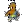

| - | Character | Speed | - | - | Score | - |
|---|---|---|---|---|---|---|
| Aria | 20:42.26 | 1037th | 4494 | 917th | ||
| Bard | - | - | - | - | ||
| Bolt | 12:46.89 | 575th | 2344 | 1045th | ||
| Cadence | - | - | - | - | ||
| Diamond | 11:51.48 | 398th | 4197 | 2987th | ||
| Dorian | 18:56.14 | 795th | 3205 | 680th | ||
| Dove | 10:28.39 | 1832nd | 506 | 1149th | ||
| Eli | - | - | 2552 | 3100th | ||
| Mary | 27:23.46 | 1241st | 2616 | 1776th | ||
| Melody | 23:48.12 | 2851st | - | - | ||
|  | Monk | 25:54.71 | 1121st | 4852 | 1634th | |
| Nocturna | 10:52.23 | 247th | 9686 | 1901st | ||
| Tempo | 13:42.35 | 1712th | 4192 | 1484th | ||
| Coda | - | - | 1284 | 116th | ||
| Story | 1:28:03.35 | 398th | 13462 | 817th | ||
| 9char | - | - | 3381 | 1329th | ||
| 13char | 4:47:51.55 | 132nd | 37106 | 91st |
| Speed | ||||||||||||||
| Hard | - | - | - | - | - | - | - | - | - | - | - | 30:09.251086th | - | - |
| NR | - | 41:59.95691st | - | 38:24.811483rd | - | - | - | - | - | - | - | - | - | - |
| Rando | - | - | - | - | - | - | - | - | - | - | - | - | - | - |
| Phasing | - | - | - | - | - | - | - | - | - | - | - | - | - | 14:05.4130th |
| Mystery | - | 33:52.391058th | - | - | - | - | - | - | - | - | - | - | - | - |
| Low | - | - | - | - | - | - | - | - | - | - | - | - | - | - |
| Speed | |||
| Low | - | - | - |
| Score | ||||||||||||||
| Hard | 118295th | - | - | - | 121479th | - | - | - | - | - | - | 32354054th | - | - |
| NR | - | 4436223rd | - | 17872184th | - | - | - | - | - | - | - | - | - | - |
| Rando | 645th | - | - | - | - | - | - | - | - | - | - | - | - | 27731st |
| Phasing | - | 7482344th | - | - | - | - | - | - | - | - | - | - | - | 345823rd |
| Mystery | 3600th | 9331771st | - | - | - | - | - | - | - | - | - | - | - | - |
| Deathless | - | - | - | - | - | - | - | - | - | - | - | - | - | - |
Last Updated:2023/04/11 12:56